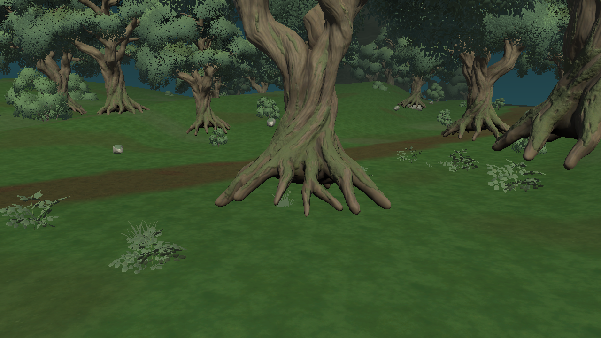
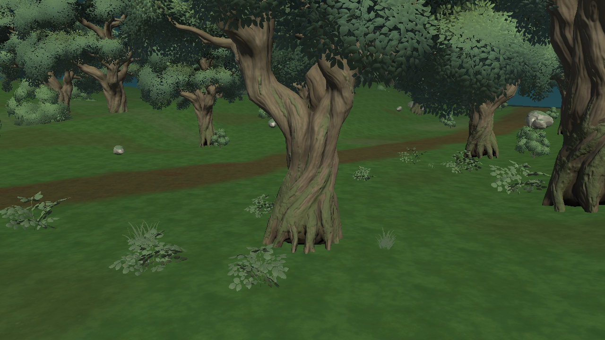

通常樹木の根元 — 修正前後
森林画質比較に戻るUnityの同一カメラで撮影。大木の原本は変更せず、通常樹木のメッシュをBlenderで編集。尖った根先を短くして幹の自然な広がりを残し、地面への接地を再調整。


通常樹木は高画質版185本／WebGL版77本の接地を調整。独立QAで有効な幹コライダー54本の接地を確認。世界樹の制作データは変更していません。
Unityの同一カメラで撮影。大木の原本は変更せず、通常樹木のメッシュをBlenderで編集。尖った根先を短くして幹の自然な広がりを残し、地面への接地を再調整。


通常樹木は高画質版185本／WebGL版77本の接地を調整。独立QAで有効な幹コライダー54本の接地を確認。世界樹の制作データは変更していません。